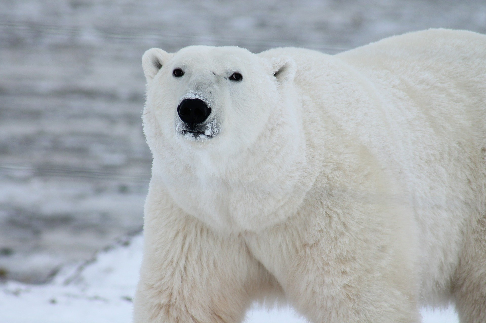

気候変動の影響を受けている哺乳類
気候変動と絶滅危惧種の関係について
IUCN(国際自然保護連合)は2021年10月時点で、3万8500種以上の野生動物を、絶滅する可能性が高い種である「絶滅危惧種」に指定しています。その中でも気候変動が絶滅危機の原因の1つとされている種は近年急増しており、2000年には15種だったのが年々増え続け、2020年には4000種を超えました。
実際にオーストラリアの北部の島に生息していたネズミの一種である「ブランブルケイ・メロミス」史上初めて人間の活動による気候変動の影響で絶滅しています。具体的には、近年の異常な海面上昇による生息地の激減が絶滅の原因とされています。
気候変動が要因の一つになっている絶滅危惧種
ホッキョクグマ

気候変動の影響を受けている絶滅危惧種の中でも最も代表的といえるホッキョクグマですが、ホッキョクグマが2100年までにほぼ絶滅すると予想する論文が2020年7月に国際的な総合学術雑誌「nature」に掲載されています。現時点でもホッキョクグマの数は過去10年間で半分近くまで減少しており、その原因には温暖化による海氷の減少や、狩りの時期の短縮、また、これによる体重、体力の低下、小グマの生存率の低下などが挙げられます。実際に2019年には、極東ロシアにあるリルカイピという村に、50頭以上のホッキョクグマが押し寄せ混乱を招きました。これも気候変動によるエサ不足が原因とされています。また気候変動以外にも、環境汚染がホッキョクグマに影響を及ぼしており、北極の一部に有害化学物質が流れ着き、これが食物連鎖を経て濃縮されホッキョクグマに影響が出るということが起きています。
山鳥
山に生息している鳥たちは地球温暖化により山頂のほうで生活している種から順に姿を消しています。これは、温暖化で気温が上がり、山鳥たちが温暖化前と同じ気温を求めて少し高度の高い場所へと移動していくという現象が起きている中で、もともと頂上付近に生息していた種はそれ以上高所に移動することができず。気温の上昇と別種の鳥が下から上がってきたことによる生息地や食料の減少が原因になっていると考えられています。実際に2017年にペルーの山岳地帯で行われた調査では、鳥類の生息している標高が平均的に高くなっていることがわかっています。また、最も標高の高い場所で確認されていた種の生息範囲、個体数がどちらも大幅に減少しているという結果も出ています。